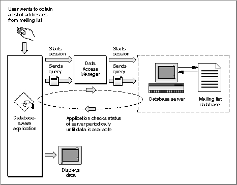

Legacy Document
Important: The information in this document is obsolete and should not be used for new development.
Important: The information in this document is obsolete and should not be used for new development.


The High-Level Interface
As Figure 12-1 on page 12-6 shows, a database-naive application--that is, one that cannot prepare a query for a specific data server--uses the Data Access Manager's high-level routines to communicate with a data server. Because the application cannot prepare a query, it must use a query document to provide one. A query document can contain code, called a query definition function, that prompts the user for information and modifies the query before the Data Access Manager sends it to the data server. The exact format of a query definition function is described in "Writing a Query Definition Function" on page 12-52.
When you want to use the high-level routines to execute a query on a data server, you first select a query document or allow the user to select one. You use high-level routines to
- Note
- The term query refers to any string of commands (and associated data) that can be executed by a data server. A query can send data to a data source, retrieve data from a data source, or reorganize the data in a data source. The Data Access Manager does not interpret or execute the query; it only implements the interface (sometimes called the application program interface, or API) that allows you to send the query to the data server.

For example, suppose a company that makes rubber ducks has a database on a minicomputer that contains a mailing list of all its customers. The database has a Data Access Language interface, and the company's marketing manager has a Macintosh computer with an application that uses high-level Data Access Manager routines to communicate with the remote database server. As Figure 12-2 illustrates, the marketing manager must also have a query document, created by another application, that she can use to get an address from the mailing list on the remote minicomputer. The query document can be as complex or as simple as its creator cares to make it; in this example, the query document is designed specifically to obtain addresses from the rubber duck mailing list. The marketing manager might have several other query documents available as well: one to extract a mailing list for a specific zip code, one to list all of the customers who have made a purchase within the last year, and so on.
- get the query from the query document
- execute the query definition function to modify the query
- send the query to the data server
- retrieve the results from any query that asks for information from the data source
- convert to text the results returned by a query
Notice that once the query document has sent the query to the data server, the Data Access Manager handles the data retrieval. Although query documents and high-level Data Access Manager routines make it very easy for you to request data from a data source, there is no way for a query document to verify that data sent to a data source has been successfully received. For that reason, it is recommended that you use the low-level interface to send data to a data source or update data in a data source.
Figure 12-2 Using high-level Data Access Manager routines

Sending a Query Through the High-Level Interface
To obtain a list of addresses from the mailing list, the marketing manager chooses the Open Query menu command from the File menu in her application. From the list of query documents displayed, she chooses one named Rubber Duck Address List.The application calls the Data Access Manager function
DBGetNewQuery, specifying the resource ID of the query ('qrsc') resource in the Rubber Duck Address List query document. TheDBGetNewQueryfunction creates a query record and a partial query from the information in the query resource. The partial query specifies the type of data (character strings) and the columns from which the data items should come (the name and address columns). The partial query lacks some specific data (the rows that should be searched) that is needed to complete the search criteria.Next, the application calls the
DBStartQueryfunction, which in turn calls the query definition function in the query document. The query definition function displays a dialog box that asks for the purchase dates to search. When the marketing manager types in the requested information and clicks OK, the query definition function adds the data to the partial query in memory. The query is now ready to be executed.Next, the
DBStartQueryfunction sends the query to the Data Access Language database extension, and the database extension sends the query over a communications network to the remote Data Access Language server. Finally, theDBStartQueryfunction commands the Data Access Language server to execute the query.Retrieving Data Through the High-Level Interface
When the application is ready to retrieve the data that it requested from the database, the application calls theDBGetQueryResultsfunction. This function determines when the data is available, retrieves it from the data server, and places the data in a record in memory. The application can then call theDBResultsToTextfunction, which uses routines called result handlers to convert each data item to a character string. TheDBResultsToTextfunction passes to the application a handle to the converted data. The application then displays the list of customers for the marketing manager.Data items and result handlers are described in "Processing Query Results" beginning on page 12-37.